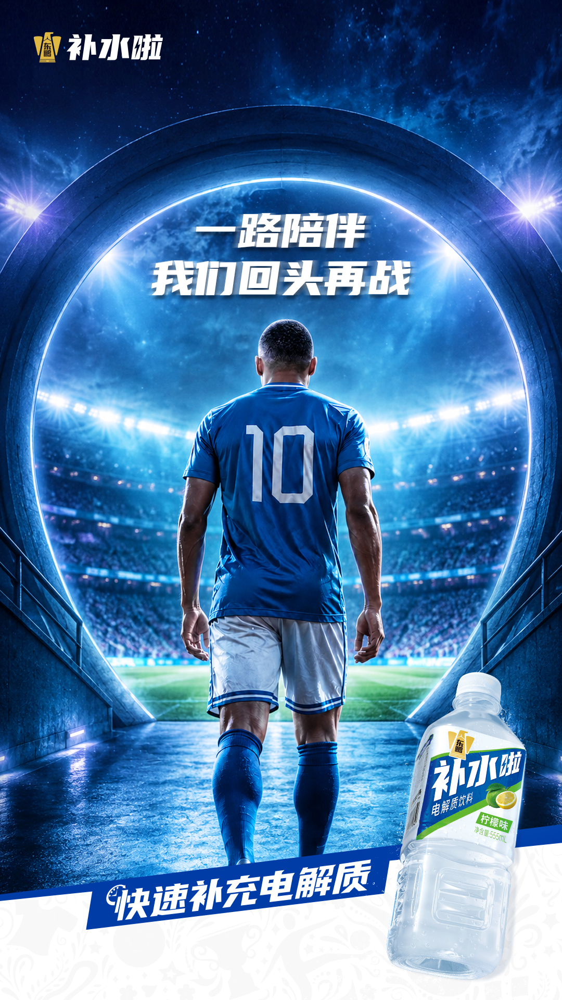

案例发生了什么


东鹏补水啦先以姆巴佩的速度、爆发力和全球影响力建立产品功能联想，再通过总台世界杯转播合作进入“补水时刻”，把球星代言、规则节点和终端产品铺市串成一条链路。
案例启示
案例启示
关键动作
- 用姆巴佩的速度资产解释“快速补充电解质”，让球星特征与产品功能直接对应。
- 将代言款铺市与世界杯多渠道传播同步推进，避免球星资源只停留在社交海报。
- 借总台转播中的“补水时刻”建立品名、行为指令与赛事场景的原生耦合。
传播与商业机制
传播路径
以“球星代言 / 总台转播合作 / 规则场景占位”为资源起点，进入球星/球队/授权内容、电商、门店、大小屏与海外渠道，让赛事权益转化为用户可接触、可讨论或可参与的内容。
商业承接
不把曝光直接等同销售，重点观察搜索、到店、商品成交、会员沉淀与重点海外市场认知，并区分品牌自报、平台数据与可独立核验结果。
可复用的方法球星代言真正有效，需要同时占住“为什么是他、为什么是这个产品、消费者在哪里遇见并购买”三个问题。
适用条件、风险与证据
- 先明确目标是国内动销、出海认知、渠道关系还是授权商品，而不是全部都做。
- 球星或球队的赛果只是放大器，必须准备常态内容和转化出口。
- 对授权范围、地域、肖像和商品库存建立可追溯台账。
核验记录可将已核动作作为内部判断基础；涉及投放规模、销售结果或合作细则时，仍应以品牌、平台或权利方的一手发布为准。 当前记录：已核（东鹏饮料官网 + 央视网 + 官方微博）；素材状态：已归档 4 张官宣、转播合作与赛果响应官方图。
品牌与权威来源物料
这里只展示可追溯到品牌、权利方、官方账号或明确注明原始出处的真实物料；研究图卡不计入案例图片。

资料与来源
官方资料、结果数据与下一步
已验证事实
- 东鹏饮料官网于 2026 年 4 月 20 日官宣，旗下电解质饮料“补水啦”签约基利安·姆巴佩为品牌代言人，并以其速度、爆发力和竞技影响力承接“快速补水、高效补给”的产品定位。
- 东鹏饮料 2026 年 4 月投资者关系记录确认，姆巴佩代言将配合世界杯赛事营销和多渠道传播，代言款产品已陆续铺市；“终端反响向好”为公司自述，未提供量化口径。
- 中央广播电视总台总经理室于 2026 年 6 月 15 日确认，东鹏补水啦成为总台 2026 美加墨世界杯转播战略合作伙伴，并把产品名与赛事转播中的“补水时刻”绑定。
- 世界杯半决赛后，补水啦官方微博仍以“无论巅峰或风雨”回应姆巴佩 8 场 8 球却无缘决赛，证明品牌准备了跨赛果的陪伴表达，而非只押夺冠祝福。
可追溯的结果
- 品牌官网援引尼尔森 2025 年度数据称补水啦位居中国电解质饮料市场第一、营收回款突破 40 亿元；该数据反映合作前的业务底盘，不能直接归因于姆巴佩或世界杯营销。
- 目前只有“代言款陆续铺市、终端反响向好”的公司定性披露，尚无代言款铺货率、单店动销、世界杯期间增量、搜索提升或广告触达等量化结果。